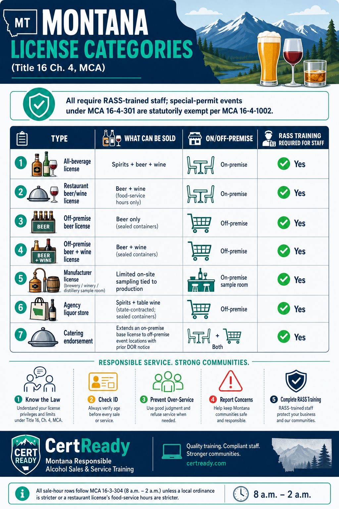

MCA 16-3-304 (paraphrase, time window verbatim): Licensed alcohol retailers in Montana must be "closed each day between 2 a.m. and 8 a.m." Local ordinances may impose stricter hours; follow whichever rule applies at your location.
Outcomes: K11
On-premises course module
MCA 16-3-304, no-below-posted-price rule, license types, special permits, and HB 211 delivery
This page mirrors the student lesson content and infographics so Montana CARD can review it without using the CertReady LMS.
MCA 16-3-304 (paraphrase, time window verbatim): Licensed alcohol retailers in Montana must be "closed each day between 2 a.m. and 8 a.m." Local ordinances may impose stricter hours; follow whichever rule applies at your location.
Outcomes: K11
Outcomes: K11
State law (MCA 16-3-304): no alcohol sales between 2 a.m. and 8 a.m. Local ordinances may close earlier. A patron present at 2:01 a.m. with an open drink served by a licensed retailer is a violation, regardless of whether they paid for it before close. **Practical house-policy last-call cadence (typical industry timing
not statute):**
Last call announced around 1:30 a.m.
No new drinks poured after 1:45 a.m.
All open containers off the bar/tables by 2:00 a.m.
Patrons out the door shortly after Door staff should announce the close progressively, not just at 2 a.m.
that's how you avoid the rush-and-resist scenario. Follow your local ordinance and house closing procedures.
Outcomes: K11, P8
Local ordinances can be stricter than state law. Some Montana cities and counties have earlier last-call requirements than the state 2 a.m. cap. Always follow the local rule that applies to your location - your city or county ordinance is the operating ceiling, the state hour is the outer cap.
Outcomes: K11
Montana does not have a numerical happy-hour limit (some states cap discount drinks at 50% or restrict happy hours to certain hours; Montana doesn't). What it has is a hard floor: a licensee may not sell liquor below the price posted for that drink.
Outcomes: K11
Outcomes: K11
Outcomes: K11
Don't free-pour promotions without confirming compliance. Montana alcohol promotions must comply with the posted-price rule, advertising rules, and any DOR/CARD requirements. Do not run BOGOs, free-drink giveaways, comp-drink campaigns, or alcohol-included promotions unless the licensee has confirmed the promotion is lawful - and, where required, secured any necessary DOR/CARD approval in advance. When in doubt, ask the licensee.
Outcomes: K11

Outcomes: K12
Servers must be 18 or older to serve alcohol in an open container in Montana (MCA 39-2-306). There is no minimum age to ring up sealed-container off-premise sales (subject to Fair Labor Standards Act federal rules).
Outcomes: K12
The catering endorsement, in practice. A bar with an all-beverage license + a catering endorsement can pour at a wedding reception in a hotel banquet room across town that night. The endorsement requires:
Pre-event notice to DOR (10 days minimum)
A licensed-employee server at the event
No bring-your-own by the host or guests
The same hours-of-service rules as the base license Without the endorsement, the base license can't legally pour at an off-site event.
Outcomes: K12
License-class boundaries you'll run into at the bar. Knowing which license your employer holds determines what you can pour. Spirits questions are the most common confusion point. A few specific scenarios:
All-beverage license: Can pour any combination of beer, wine, and distilled spirits. Most stand-alone bars, taverns, and full-service restaurants hold this class. If your bar back has a bottle of tequila on the rail, you almost certainly hold an all-beverage license.
Restaurant beer/wine license: Beer and table wine ONLY. No distilled spirits
no vodka in a Bloody Mary, no whiskey in an Irish coffee, no tequila in a margarita. Some restaurants try to work around this with "mocktail" presentations of classic cocktails. That's a hard line. If a customer orders a margarita at a beer/wine restaurant, the correct response is to offer beer or wine alternatives and explain (politely) that the kitchen license type doesn't permit distilled spirits.
Off-premise beer/wine license: Sales for consumption away from the premises. Grocery stores, c-stores, and dedicated beer/wine retailers hold this class. Different sale-hour and ID-check workflow
they sell the product but don't pour it. Off-premise courses cover this licensee category in depth; this on-premise course mentions it for context.
Agency liquor store: State-authorized retail of distilled spirits for off-premise consumption (and table wine per MCA 16-2-101). Operating hours are 8 AM to 2 AM per MCA 16-2-104, same as licensed retailers. Agency stores are NOT a category an on-premise server typically works at, but customers sometimes ask servers questions about them. When in doubt about your license class, ask your manager or check the printed license posted at the door
Montana law requires the license to be visibly displayed on the premises.
Outcomes: K12, P8
HB 211 (eff. January 1, 2026) created a third-party alcohol delivery license for platforms like DoorDash, Uber Eats, Grubhub, and Instacart. It also renamed the Act to the Responsible Alcohol Sales, SERVICE, and DELIVERY Act. Delivery drivers must complete either a responsible server and sales training program or a delivery training program under Montana law before making their first alcohol delivery. This on-premises RASS course is written for licensed-location staff, not as a standalone delivery-driver course.
Outcomes: K12
Outcomes: K12
What's the right call?
Scenario 1: The 1:55 a.m. last-call. It's 1:55 a.m. A regular flags you down and asks for one more shot. You haven't yet called last call.
Outcomes: K11, P8
What's the right next step?
Scenario 2: The unannounced "buy one get one". Your manager texts the team mid-shift: "It's slow tonight - let's run a buy-one-get-one on house cocktails for the next two hours." You haven't seen any documentation that the licensee has confirmed this promotion is lawful.
Outcomes: K11, P8
Two categories of special permits exist under MCA 16-4-301. Category one is special-event permits
issued to qualifying organizations (nonprofits, civic groups, fraternal societies) to sell beer and table wine at a discrete event, up to 12 such permits per qualifying organization per year. Category two is veterans'/fraternal post permits
issued to recognized posts/lodges to sell all alcoholic beverages at their premises on specific event days, also capped at 12 annually. A standard restaurant or bar doesn't normally hold special permits; the special-permit world is wedding receptions in church basements, charity wine tastings at country clubs, and American Legion post Saturday-night events. The critical statutory point for training purposes: MCA 16-4-1002 says 'this part does not apply to special permits issued under 16-4-301'
meaning the RASS training requirement is statutorily waived for staff who serve under a special permit. A bartender hired for a one-night Knights of Columbus charity fundraiser does not need to hold a current RASS card to pour at that event. Standard on-premise licensees do; special-permit pours are the explicit exception.
Outcomes: K11
The training-exemption trap. Just because RASS training is waived under a special permit doesn't mean the substantive rules vanish. The bartender at the church-basement wedding reception still cannot serve a visibly intoxicated guest (MCA 16-3-301(4)(b) and MCA 16-6-304 still apply) and still cannot serve anyone under 21 (MCA 16-6-305 still applies). Dram-shop liability under MCA 27-1-710 attaches to the permit-holding organization the same way it does to a licensed bar. The waiver is for the training requirement, not for the underlying conduct rules. Many special-permit organizations use this carve-out as a chance to staff with volunteers; the smart organizations still bring in RASS-trained staff anyway, precisely because the carve-out doesn't insulate them from the catastrophic-event risk that the training is designed to prevent. A church group running a wedding reception that over-serves a guest who drives home and crashes is in dram-shop court regardless of whether the bartender held a RASS card. The practical takeaway for restaurant and bar managers: if your venue ever hosts a private event under a borrowed special permit (a wedding rental, a venue-for-hire arrangement, a charity fundraiser), confirm with the permit-holding organization in writing who is responsible for the underlying conduct rules and whether your standard service staff are providing the pour. Where your own staff are pouring under the permit holder's umbrella, your licensee record can be affected by an incident even on a 'permit night.' The cleanest practice is to require RASS-trained staff for every pour, every event, every shift - the certification cost is trivial compared to a single dram-shop notice under MCA 27-1-710(8). The same logic applies to host bars renting space to outside caterers: the host bar's licensee record can be implicated even when the pour staff are nominally the caterer's employees.
Outcomes: K11
Passing score: 80%
When must a Montana licensed retailer be closed for alcohol sales each day?
Correct answer: c. 2 a.m. to 8 a.m.
Outcomes: K11
Montana allows licensees to run a 'two-for-one' on liquor cocktails as long as they don't advertise it.
Correct answer: false. False
Outcomes: K11
Which Montana license can sell distilled spirits for on-premise consumption?
Correct answer: a. All-beverage license
Outcomes: K12
Under Montana's third-party alcohol delivery law (effective January 1, 2026), third-party delivery drivers may deliver:
Correct answer: a. Beer and table wine only
Outcomes: K12
What is the minimum age to serve alcohol in an open container on premise in Montana (MCA 39-2-306)?
Correct answer: b. 18
Outcomes: K12
A holder of a Montana special permit (16-4-301) for a charity event must complete RASS training.
Correct answer: false. False
Outcomes: K12
What is a practical house-policy "no new pours" cutoff for a 2:00 a.m. close, to avoid an after-hours alcohol situation at the bar?
Correct answer: b. 1:45 a.m.
Outcomes: P8
List two requirements for a third-party delivery driver under HB 211.
Outcomes: K12